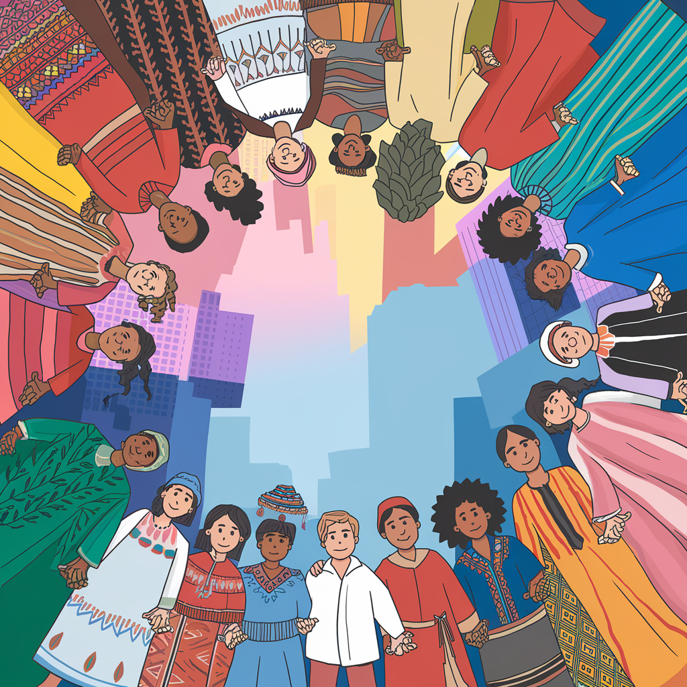
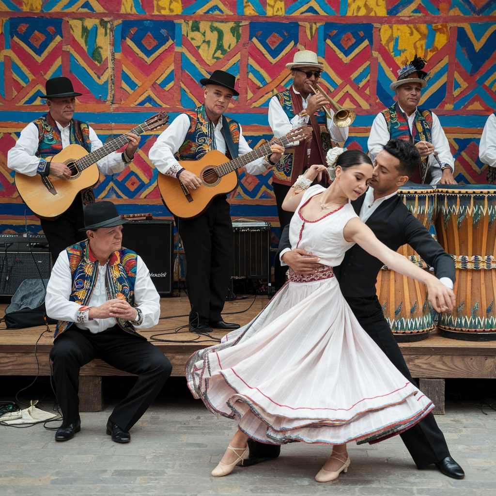

Bienvenidos a la presentación de proyectos realizados por nuestros estudiantes. A través de sus trabajos, exploraremos la riqueza cultural de diferentes países, destacando sus músicas, danzas y tradiciones. ¡Disfruta del recorrido!
Estudiantes: Alaoui Alia, Kadiri Malak, y el Hababi Sami
Resumen: Una exploración de las danzas tradicionales argentinas, como el tango, la chacarera y la zamba, y su importancia en la cultura del país.
Estudiantes: El Messoussi Radia y Karmachi Lina
Resumen: Un recorrido por la riqueza cultural de Cuba a través de sus músicas y danzas como el son cubano, el danzón, la rumba y la salsa.
Estudiantes: Jad Bouayad,Khalid Barhdadi y Ahmed Ziad Bathaoui
Resumen: Una exploración de las danzas tradicionales peruanas como la Marinera, el Huayno y el Festejo. Estas expresiones artísticas reflejan la diversidad cultural del país, fusionando influencias indígenas, africanas y españolas, destacando la riqueza histórica y la identidad nacional del Perú.
Estudiantes: Yazid Tanharte, Belkhayat Jallil y Bouamrani Mohammed Amine
Resumen: Una presentación sobre las danzas tradicionales bolivianas como la Morenada, la Diablada y los Caporales. Estas danzas reflejan la rica herencia cultural del país, combinando tradiciones indígenas y mestizas, y son elementos clave en festivales como el famoso Carnaval de Oruro, reconocido como Patrimonio Cultural de la Humanidad.
Estudiantes: Alfiguigui Nour y Bouchane Yasmine
Resumen: Una presentación sobre la riqueza musical y las danzas tradicionales de México, incluyendo el mariachi, el jarabe tapatío y la danza de los viejitos.
Estudiantes: Bouchikhi Rim y Alaoui Rym
Resumen: Una exploración de la riqueza cultural brasileña a través de sus bailes como la samba, el forró, y el frevo, destacando el famoso Carnaval de Brasil.
Estudiantes: Tahiri Miya y El Alami Hajar
Resumen: Una presentación de las danzas tradicionales guatemaltecas, como el Baile del Venado y el Palo Volador, reflejando la historia y espiritualidad del país.
Estudiantes: Lilia Benyoussef, Malak Al Jattari, y Camelia El Kadiri
Resumen: Una exploración de los bailes tradicionales de Puerto Rico como la Bomba, la Danza y la Plena, destacando su conexión con la identidad cultural del país.
Estudiantes: Youssef Lakhal y Kacimi Jad
Resumen: Una exploración de la riqueza cultural de la República Dominicana a través de su música y danzas como el merengue, la bachata, y más.
Estudiantes: Nour Abidi y Filali Lilya
Resumen: Una presentación sobre el baile nacional de Venezuela, el Joropo, incluyendo sus raíces, tipos, y características únicas.